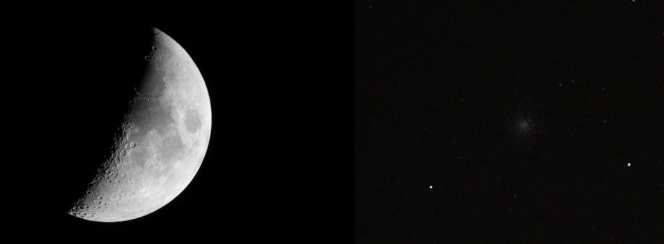
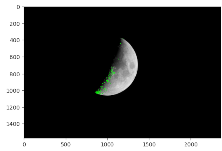
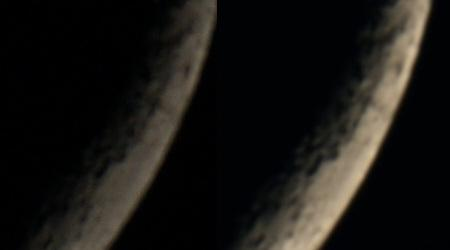
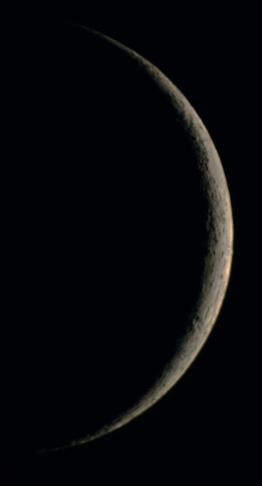
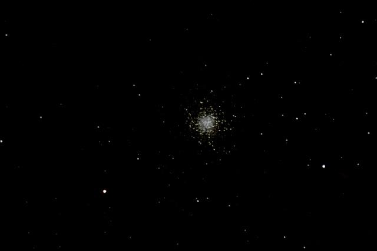

2025-05-17 13:50
Stacking of Astronomical Images
Astrophotographers obtain stunning images by taking tens or even hundreds of photos. By stacking these images, they create an average picture that minimizes noise. Sounds easy, like a good chance to learn some image processing with the OpenCV library.
This post is about my exploration towards building a script to align and stack some astronomical photographies.
I finally acquired a small telescope, and I managed to take a few tenths of pictures of the Moon and the globular cluster M13.
I am a newbie when it comes to taking pictures with the telescope, so they are what they are. Moreover, I struggled with the focus adjustment and the first ones I took of the Moon are way too blurry to brag about. But I did get the bite of curiosity for the processing of astrophotographies.
These are the steps it takes to create a beautiful image:
Take some dozens of pictures of your target.
Align the individual pictures.
Stack the images and calculate the mean value of each pixel.
Apply a wavelet-based enhancement filter to highlight details.
Produce a single, flat image.
Adjust contrast and colors to fine-tune the final picture to your liking.
While there are software programs (even free ones!) available to perform all of these steps, I wanted to try my hands at the first two processes, alignment and stacking.
Alignment of the Images
Consider two images of the same scene where the position of the camera has changed. The scene will be the same, but its position within the image changes. The process of alignment finds a transformation to make images A and B display the scene at the same position.
While exploring the Python bindings of OpenCV tutorials, I found several ways to achieve this. The method that works for me is outlined as follows:
Start with a base image. All other images will be aligned to this initial picture.
Detect keypoints and calculate their descriptors using the ORB algorithm.
- For each additional image:
Detect their keypoints and describe them with the same ORB algorithm.
Use a FLANN matcher to pair equivalent descriptors from both images.
Find the affine transformation matrix to align the descriptors.
Apply the affine transformation.
Save the transformed image.
This method worked after some trial-and-error work. The most effective transformation I found was a partial Affine transformation with only two degrees of freedom. This results in a 2x3 matrix that includes rotation, translation, and a scale change. This was not my first choice; I initially tried using a homography, which resulted in significant deformation of my images because of the perspective transformation.
The ORB keypoints and descriptors worked very well with my images. This is one example:
However, they did not work at all with an earlier picture of the Moon due to a lack contrast.
Adjusting For Fainter Images
The solution to these fainter images (besides using a higher ISO or a longer exposure time, which I will surely try next time) is to pre-process the images beofre trying the ORB algorithm. This pre-treatment should increase contrast while preserving important, position-invariant features. I attempted histogram equalization to improve contrast, but my pictures are so faint that the black sky became very clear and noisy.
These are the images before the pre-treatment. Notice the absence of descriptors in the second image:
The solution was to apply thresholding. OpenCV implements an adaptive thresholding algorithm that automatically selects the threshold point. It yielded very good results. The following picture shows the ORB descriptors found after thresholding and slightly eroding the image:
After this transformation, the alignment phase worked as expected.
Stacking
After alignment, the stacking phase begins. My program is straightforward: It sums all the images together and divides the result by the number of images. Voilà, it's the average. It is quite simple, and it works.
As an average, the expected image should have much less noise, thought it might be blurry. This example shows the result for the globular cluster M13 after alignment and stacking:

The image above shows one of the unprocessed images to the left, and the resulting stacked picture to the right. Notice the noisy sky. In contrast, the Moon images show a smaller difference. The variation in brightness results from using images with different exposure times to build the stacked image.
Wavelet decomposition
The most impressive enhancement comes from the last step, wavelet deconvolution, used to bring up the details in the pictures. I used the GIMP for this part, and the process is quite simple. I applied the wavelet decompose filter with 5 scales and adjusted the original image so that only the top three scales are visible on the result. In the example below, the filter is applied above the red line:
I close this long post with the base and enhanced pictures, for reference:
Postscript
The new AI technologies are very helpful for this kind of explorations. I asked questions about the general outlines, about the algorithms, about their parameters, and the results were stunning. I obtained working code snippets and improvements for my Python programs. I even improved my writing style with it.
I used Mistral for this hobby project.
